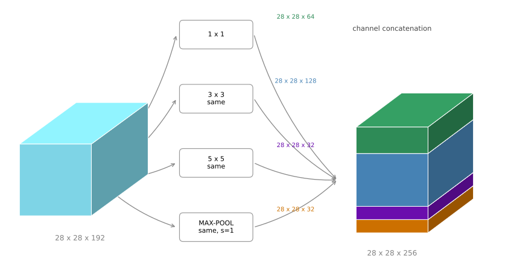
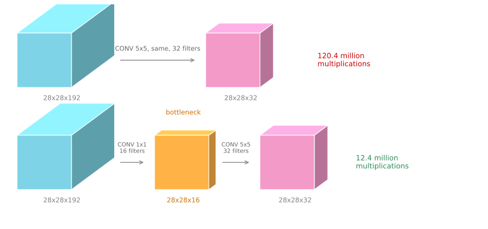
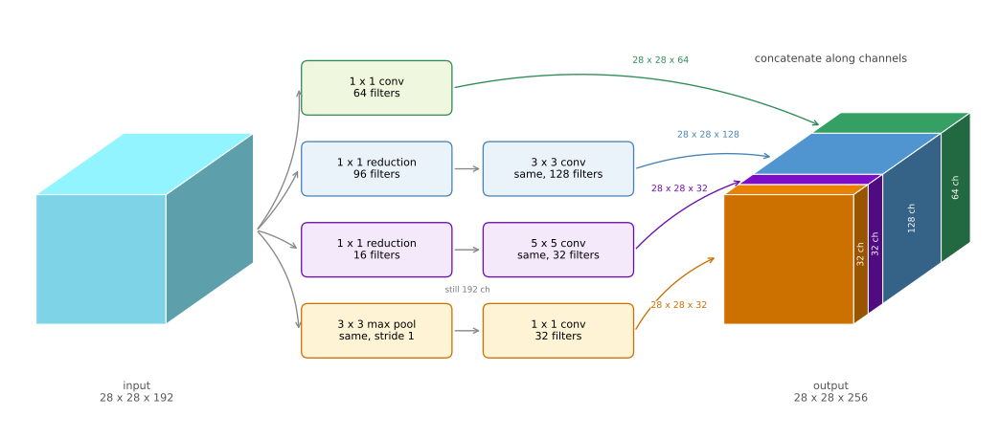

Inception Network
deep-learning
convolutional-neural-networks
computer-vision
architecture
inception
googlenet
Why an inception module applies every filter size at once, how a one by one bottleneck cuts its cost by a factor of ten, and how the modules stack into GoogLeNet.
When designing a convolutional layer you have to pick things. Do you want a 1 by 1 filter, or 3 by 3, or 5 by 5? Or do you want a pooling layer instead? What the inception network says is, why not do them all. It makes the architecture more complicated, but it also works remarkably well.
Inception Module
Say you have a 28 by 28 by 192 input volume. Instead of committing to one filter size, or even to whether you want a convolutional layer or a pooling layer, an inception layer does all of them.
You could use a 1 by 1 convolution and get 28 by 28 by 64 out. Maybe you also want to try a 3 by 3, giving 28 by 28 by 128. You then stack that second volume next to the first. To make the dimensions line up, the 3 by 3 is a same convolution, so its output height and width stay at 28 by 28. Perhaps a 5 by 5 filter works better, so do that too and have it output 28 by 28 by 32, again as a same convolution.
Finally, maybe you do not want a convolutional layer at all. Apply pooling, which gives some other output, and stack that up as well. Here pooling outputs 28 by 28 by 32.
One detail about the pooling branch is unusual and easy to miss. To make all the dimensions match you have to use padding for the max pooling, which is not how pooling normally works. If you want the input to be 28 by 28 and the output to be 28 by 28 as well, you need same padding together with a stride of one for the pooling. That looks odd at first, but it is what lets the pooling output stack alongside the others.
With an inception module like this you input one volume and output another. Adding up the branches, \(64 + 128 + 32 + 32 = 256\), so the module takes 28 by 28 by 192 in and gives 28 by 28 by 256 out.
That is the heart of the inception network, due to Christian Szegedy, Wei Liu, Yangqing Jia, Pierre Sermanet, Scott Reed, Dragomir Anguelov, Dumitru Erhan, Vincent Vanhoucke, and Andrew Rabinovich, published as Szegedy et al. (2015). The basic idea is that instead of picking one filter size or pooling and committing to it, you do them all, concatenate the outputs, and let the network learn whichever combination of filter sizes it wants to use.
Problem of Computational Cost
There is a problem with the inception module as described, namely computational cost. It is worth working out the cost of just the 5 by 5 branch.
That branch takes the 28 by 28 by 192 input and applies a 5 by 5 same convolution with 32 filters, producing 28 by 28 by 32. There are 32 filters because the output has 32 channels, and each filter is 5 by 5 by 192.
The total number of multiplications is the number of output values times the number of multiplications needed for each one. There are \(28 \times 28 \times 32\) output values, and each one costs \(5 \times 5 \times 192\) multiplications.
output values 28 x 28 x 32 = 25,088
cost per value 5 x 5 x 192 = 4,800
total multiplications = 120,422,400 (120 million)You can do 120 million multiplications on a modern computer, but it is still an expensive operation, and this is one branch of one module.
Bottleneck Layer
Using the one by one convolution, the cost can be cut by roughly a factor of ten.
Here is the alternative. Take the same 28 by 28 by 192 input, use a one by one convolution to reduce it to 16 channels instead of 192, and then run the 5 by 5 convolution on that much smaller volume to get the final output. The input and output dimensions are unchanged, still 28 by 28 by 192 in and 28 by 28 by 32 out. What has changed is that the huge volume on the left has been shrunk to a much smaller intermediate volume with 16 channels instead of 192.

This intermediate volume is sometimes called a bottleneck layer, because a bottleneck is the smallest part of something. If you picture a glass bottle, the bottleneck is where it narrows. In the same way this is the narrowest part of the network, where the representation is shrunk before being expanded again.
Now the cost. The one by one convolution has 16 filters, each of dimension 1 by 1 by 192, where that 192 matches the input channel count. Then the 5 by 5 convolution runs on the 16 channel volume.
1x1 step 28x28x16 outputs, 192 each = 2,408,448 (2.4M)
5x5 step 28x28x32 outputs, 5x5x16 each = 10,035,200 (10.0M)
total = 12,443,648 (12.4M)
against the direct version = 120,422,400 (120.4M)
ratio = 0.103, about one tenthSo the computational cost drops from about 120 million multiplications to about 12.4 million, roughly a tenth. The number of additions needed is very similar to the number of multiplications, which is why only multiplications are counted.
You might reasonably worry that shrinking the representation so dramatically hurts performance. It turns out that so long as the bottleneck is implemented within reason, you can shrink the representation size significantly without seeming to hurt performance, while saving a great deal of computation.
Review Questions
1. Why does the max pooling branch need same padding and a stride of one, which is not how pooling is normally used?
TipAnswer
Because the four branch outputs are concatenated along the channel axis, and concatenation requires them to agree on height and width. The other three branches are same convolutions producing 28 by 28, so the pooling has to produce 28 by 28 as well. Normal pooling with \(f=2\), \(s=2\) would halve it to 14 by 14 and could not be stacked. Same padding with a stride of one is the only setting that leaves the spatial size untouched.
1. Where does the 120 million figure come from?
TipAnswer
It is the number of output values times the cost of each. The output is 28 by 28 by 32, which is 25,088 values, and each one requires an element-wise product over a \(5 \times 5 \times 192\) window, which is 4,800 multiplications. Multiplying gives \(25{,}088 \times 4{,}800 = 120{,}422{,}400\).
1. The bottleneck version does two convolutions instead of one. Why is doing more layers cheaper?
TipAnswer
Because cost is driven by the depth of the volume the expensive filter has to look through. The 5 by 5 filter is the costly part, at \(5 \times 5 \times n_C\) multiplications per output value. Running it against 192 channels costs 4,800 per value; running it against 16 costs 400. The extra 1 by 1 layer that performs the reduction is cheap, at 192 multiplications per value over a smaller output, so paying 2.4 million to avoid 110 million is a large net win.
Building the Full Network
With the bottleneck idea in hand, the complete inception module can be assembled. The module takes as input the activation from some previous layer, again 28 by 28 by 192.
The example worked through above was the 1 by 1 followed by the 5 by 5, where the 1 by 1 has 16 channels and the 5 by 5 outputs 28 by 28 by 32. To save computation on the 3 by 3 convolution you do the same thing there, putting a 1 by 1 in front of it, and the 3 by 3 outputs 28 by 28 by 128.
The 1 by 1 branch needs no reduction, because there is no point putting a 1 by 1 convolution in front of another 1 by 1 convolution, so it is a single step outputting 28 by 28 by 64.
Finally the pooling layer. To be able to concatenate everything, the pooling uses same padding so the output stays 28 by 28. But notice that max pooling, even with same padding and a 3 by 3 filter at stride 1, gives 28 by 28 by 192. Pooling acts on each channel independently, so it has the same depth as its input, which is a lot of channels. So you add one more 1 by 1 convolutional layer after the pooling to shrink the number of channels, taking it down to 28 by 28 by 32 using 32 filters of dimension 1 by 1 by 192. Without that step the pooling branch would dominate the channels of the final output.
Then you take all of these blocks and do channel concatenation, giving \(64 + 128 + 32 + 32 = 256\), so 28 by 28 by 256.

That is one inception module, and the inception network is more or less a lot of these modules put together. In the picture from the paper you notice many repeated blocks, and although the whole thing looks complicated, each block is just the module above. There are some extra max pooling layers between them to change the height and width, but essentially the network is these blocks repeated at different positions. If you understand the inception block, you understand the inception network.
Side Branches
There is one more detail if you read the paper, namely some additional side branches.
The last few layers of the network are a fully connected layer followed by a softmax that makes the prediction. What the side branches do is take a hidden layer from partway through the network, pass it through a few fully connected layers, and use that to make a prediction with its own softmax output.
What this accomplishes is to help ensure that the features computed in the intermediate layers, not just the final ones, are already good enough to predict the output class of an image. This appears to have a regularizing effect and helps prevent the network from overfitting.
This particular network was developed by authors at Google, who called it GoogLeNet, spelled that way to pay homage to LeNet.
As a closing detail, the name inception comes from the paper citing the “we need to go deeper” meme, with the URL as an actual reference, as motivation for building deeper networks. It is not often that research papers get to cite internet memes.
Since the original module, the authors and others have built newer versions, so you sometimes see inception v2, v3, and v4 in use. There is also a version that combines the inception module with the residual network idea of skip connections, which sometimes works even better. All of them are built on the basic idea of the inception module stacked many times over.
The next page turns to architectures designed for devices where computation is scarce.
Review Questions
1. Why does the pooling branch need a 1 by 1 convolution after it, when the other branches have theirs before?
TipAnswer
Pooling has no filters and cannot change the channel count, so its output has the same depth as its input, 192 channels. Putting a 1 by 1 in front would be pointless, since the pooling would just pass whatever depth it received straight through. The reduction has to come afterwards, taking 192 down to 32, otherwise the pooling branch alone would contribute 192 of the concatenated channels and swamp the other three.
1. Why is there no 1 by 1 reduction in front of the 1 by 1 branch?
TipAnswer
It would accomplish nothing. Two 1 by 1 convolutions in sequence do the same kind of work as one, so the branch is a single step. The reductions exist to make an expensive 3 by 3 or 5 by 5 filter look through fewer channels, and a 1 by 1 filter is already the cheapest possible.
1. What do the side branches in GoogLeNet do, and why do they help?
TipAnswer
They take a hidden layer partway through the network, run it through a few fully connected layers, and attach their own softmax prediction. This forces the intermediate features to be good enough to classify the image on their own, rather than only being useful after every remaining layer has run. That acts as a regularizer and helps prevent overfitting.
1. An inception module lets the network use every filter size at once. What is the cost of that flexibility, and how is it managed?
TipAnswer
The cost is computation. Running a 5 by 5 convolution directly against a 192 channel volume takes about 120 million multiplications for one branch of one module, and the network stacks many modules. It is managed with 1 by 1 bottleneck layers that shrink the channel count before the expensive filters run, cutting that branch to about 12.4 million, roughly a tenth, with no measurable loss in performance.
References
- Szegedy, C., Liu, W., Jia, Y., Sermanet, P., Reed, S., Anguelov, D., et al. (2015). Going deeper with convolutions. In 2015 IEEE Conference on Computer Vision and Pattern Recognition (CVPR) (pp. 1-9). IEEE. https://doi.org/10.1109/CVPR.2015.7298594